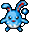
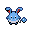

Pokédex / #184

Azumarill #184
WaterFairy
When it plays in water, it rolls up its elongated ears to prevent their insides from getting wet.
Generation 2 · Johto

Stats
| Attack | 50 | |
|---|---|---|
| Defense | 80 | |
| Sp. Atk | 60 | |
| Sp. Def | 80 |
In the wild
| Wild level | 40–50 |
|---|---|
| HP | 100 |
| Experience | 12 |
| Egg groups | Water 1, Fairy |
Evolution
- Evolves from Marill at level 35.
Moves
| Level | Move | Type | Category | Power | Energy | Cooldown | Effect | |
|---|---|---|---|---|---|---|---|---|
| 1 | Tackle | Normal | Physical | 15 | 15 | 1s | Tackle is one of the most common and basic moves a Pokemon learns. It deals damage with no additional effects. | |
| 5 | Bubble | Water | Special | 10 | 40 | 3s | Bubble deals damage and has a 10% chance of lowering the target's Speed by one stage. | |
| 10 | Water Gun | Water | Special | 40 | 45 | 9s | Water Gun inflicts damage and has no secondary effect. | |
| 15 | Aqua Tail | Water | Physical | 90 | 90 | 14s | Aqua Tail deals damage and has no secondary effect. | |
| 20 | Defense Curl | Normal | Status | – | 60 | 60s | Defense Curl raises the user's Defense by two stages. | |
| 25 | Double-Edge | Normal | Physical | 120 | 120 | 18s | Double-Edge deals damage and has no secondary effect. | |
| 30 | Aqua Ring | Water | Status | – | 100 | 120s | The user surrounds itself with a veil of water, allowing it to restore 1/16 of its max HP at the end of every turn during 16 turns. | |
| 40 | Bubblebeam | Water | Special | 65 | 70 | 16s | Bubblebeam deals damage and has a 10% chance of lowering the target's Speed by one stage. | |
| 45 | Muddy Water | Water | Special | 9 | 100 | 22s | Muddy Water deals damage and has a 30% chance of lowering the target's Accuracy by one stage. | |
| 50 | Rain Dance | Water | Status | – | 100 | 60s | Raind Dance raises the user's Attack and Defense by one stage. | |
| 55 | Superpower | Fighting | Physical | 120 | 120 | 20s | Superpower deals damage but lowers the user's Attack and Defense by one stage each after attacking. | |
| 60 | Water Sport | Water | Status | – | 60 | 60s | Water Sport increases user ATTACK and DEFENSE stats. | |
| 65 | Play Rough | Fairy | Physical | 90 | 90 | 15s | The user plays rough with the target and attacks it. This may also lower the target's Attack stat. | |
| 70 | Hydro Pump | Water | Special | 110 | 120 | 27s | Hydro Pump inflicts damage and has no secondary effect. |
Field abilities
DigStrengthWaterfallRock SmashSurfDiveHeadbutt
Special abilities
Thick FatHuge Power
Egg moves
AmnesiaAqua JetBelly DrumBody SlamCamouflageCopycateEncoreFake TearsFuture SightMuddy WaterPerish SongPresentRefreshSingSlamSoakSuperpowerSupersonicTickleWater Sport
Technical machines
BideBlizzardBrick BreakDefense CurlDouble EdgeDouble TeamDynamic PunchFocus PunchHailHeadbuttHyper BeamIce BeamIce PunchIcy WindIron TailLight ScreenMimicMud SlapRageRain DanceRestSubstituteSwiftToxicWater Pulse
Drops
| Item | Amount | Chance | |
|---|---|---|---|
| water gem | 1–10 | 100% | |
| water pendant | 1 | 43.8% | |
| pot of water | 1 | 28% | |
| frozen tear | 1 | 14% | |
| coral comb | 1 | 8.75% | |
 | azumarill doll | 1 | 0.1% |
| Splash Plate | 1 | 0.025% | |
| Pixie Plate | 1 | 0.025% | |
| TM 11 | 1 | 0.01% | |
| TM 12 | 1 | 0.01% | |
| TM 55 | 1 | 0.01% | |
| TM 62 | 1 | 0.01% | |
| held mystic water | 1 | 0.01% | |
| held pink bow | 1 | 0.01% |